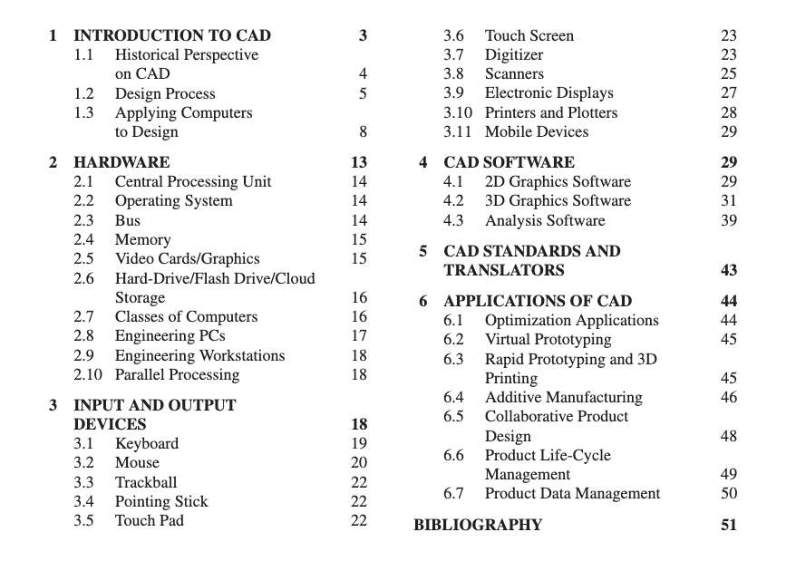

Next >> Examples
About
這裡是國立虎尾科技大學 - 機械設計工程系 - 電腦輔助設計實習課程網站.

(from Myur Kutz, 2005, Mechanical Engineers' Handbook 4th Edition, Volume2, Part1, page3.)
從上述機械工程師手冊中, 有關 CAD 說明如下:
Computer-aided design (CAD) uses the mathematical and graphic processing power of the computer to assist the engineer in the creation, modification, analysis, and display of designs.
Many factors have contributed to CAD technology being a necessary tool in the engineering world for applications including shipbuilding, automotive, aerospace, medical, industrial, and architectural design, such as the computer's speed in processing complex equations and managing technical databases.
若從產品開發流程與團隊成員的角度而言, 電腦輔助設計的本質在運用電腦與周邊相關軟硬體, 以達到多人參與協同產品設計流程時, 針對每一個細節與項目, 都能夠少一點負擔 (less burden), 多一些建樹 (more achievements) 的目標, 期望在產品從概念至回收的生命週期 (life cycle) 中, 能以最少成本付出, 取得最大效益.
少負擔:
- 能否利用高效能且具開放延伸特性的軟硬體工具執行設計, 無需安裝維護厚重且架構封閉的軟硬體設備.
- 能否運用分散式版次管理系統儲存設計內容, 無需擔心多人協同設計下,改版內容混淆, 權責無法區分, 資料因硬體故障或遭破壞而毀損.
- 將重複或繁雜的工作交由電腦處理, 設計者選擇處理較具價值, 且有助於持續提升解題知能的工作項目.
多建樹:
- 讓每一項投注心力的工作, 都留下歷程紀錄, 除可自我檢視成果, 也可提供他人查核驗證.
- 即時公開利用電腦輔助設計時所採用的假設, 方法, 遭遇困難, 參考資料搜尋範圍與解決方案等細節.
- 隨時做好利用電腦與網路說明設計理念與成果簡報的準備.
CAD: Do Computers Aid the Design Process After All? (電腦輔助設計: 電腦真的有助於設計流程嗎?)
至於所謂電腦輔助機械設計, 是使用電腦軟體進行機械產品相關系統設計 (包含機電與資訊整合, ref), 並記錄產品的設計過程. 主要用於建立產品的初步設計與佈局, 提供設計細節與運算, 構建 3D 模型, 繪製並發布工程圖, 同時也與工程分析, 行銷, 製造等部門及產品用戶間進行互動.
關鍵字:
電腦軟體, 紀錄產品設計過程, 產品初步設計與佈局, 設計細節, 設計運算, 3D 模型, 工程圖, 工程分析, 行銷, 製造, 產品用戶, 互動.
這個學期的電腦輔助設計實習包括五個主題:
請登入 @gm 帳號後, 下載 cad2021_textbook.pdf 課程教材, 以及採可攜程式系統編譯的 cad2021_coppeliaSim.7z.
- 直播與討論 - 每一位學員都必須要配置隨身碟, 耳機, 麥克風與 webcam, 有能力主持線上會議及錄影, 開會後各學員必須針對會議內容, 錄製相關內容操作過程影片與心得報告, 各影片必須剪輯編修後配上說明字幕. 每一位學員在線上會議前, 要針對討論主題進行準備, 並在過程中針對議題發表看法, 每次開會後, 各學員將針對會議錄影與心得報告, 直接透過線上表單進行 self-evaluation and peer review.
- MCAD - 設計多軸機械手臂與周邊設施, 開發能夠自動組裝機械手臂的彈性製造系統 (FMS, Flexible Manufacturing System) 與 AS/RS (Automated Storage and Retrieval System) 系統.
- SSO - 利用 @gm 帳號作為基礎, 以 CAD 完成之各項網際輔助設計系統, 包含各組的 Fossil SCM 系統都必須透過 SSO (Single Sign-On) 架構完成. 其中包括網際齒輪減速箱輔助設計系統與各套件 (Solidworks, Inventor 與 NX) 的網際零件訂製系統.
- Robotics - 透過圖書館所提供的 Robotics 相關電子書介紹, 整理 FMS 相關系統的原理與應用.
- 系統開發 - 在上述主題研究過程中, 所衍生其他有關的電腦輔助機械設計開發內容.
下列是 2005 年 MIT Structure and Interpretation of Computer Programs 課程的第一週教學影片, Harold Abelson 教授一開場便說: computer science is not a science (當時的科系名稱為 Electric Engineering and Computer Science). It's also not really very much about computers. And that is, when some field is just getting started and you don't really understand it very well, it's very easy to confuse the essence of what you're doing with the tools that you use.
I think in the future people will look back and say, yes, those primitives in the 20th century were fiddling around with these gadgets called computers, but really what they were doing is starting to learn how to formalize intuitions about process, how to do things, starting to develop a way to talk precisely about how-to knowledge.
Overview and Introduction to Lisp (source, Closed Caption)
課程倉儲, 網站, 討論區與所使用工具:
Repository: https://github.com/mdecourse/cad2021
Github Pages: https://mde.tw/cad2021
Zulipchat: https://kmolab.zulipchat.com
Onshape: https://www.onshape.com/en/education/
CoppeliaSim: https://www.coppeliarobotics.com/
CAD 歷史與相關參考資料:
CAD History.pdf
CAD Book.pdf
2005_Ten challenges in computer-aided design.pdf
https://github.com/CadQuery/cadquery
https://github.com/CadQuery/CQ-editor
https://github.com/alainrinder/quoridor.py, RoboDK and CoppeliaSim
https://github.com/Quentin18/Quoridor-Online
https://github.com/mrkvost/quoridor
https://marmelab.com/blog/2019/10/24/quoridor-part-1.html
Openspiel: framework for reinforcement learning in games
https://github.com/CadQuery/cadquery
https://github.com/gorisanson/quoridor-ai
https://github.com/zack-hill/quoridor-web
Mastering Quoridor (thesis)
能夠在 CoppeliaSim 建立步步為營桌遊場景, 以按鍵控制兩人, 四人或六人對陣.
設法建立電腦程式, 可在 CoppeliaSim 場景中與單一使用者或多使用者對陣.
是否也能利用 RoboDK 或 Webots 建立對應場景?
四人步步為營桌遊 (線上版, 強化學習, AI Player)
六人步步為營桌遊
CAD 延伸:
Onshape Featurescript: https://cad.onshape.com/FsDoc/
Beginner's Guide to Featurescript (Video)
Custom Features
Spur Gear (Update)
SolidWorks API: http://mde.tw/cad2020/content/HW1_SW.html
Inventor API: http://mde.tw/cad2020/content/HW1_INV.html
NX API: http://mde.tw/cad2020/content/HW1_NX.html
電腦輔助設計室與協同設計室行事曆
全頁檢視
Next >> Examples